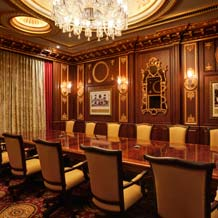
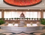
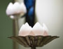

Diwali Offers
Family, friends and Taj! Bring them all together this Diwali with our special offers. Legendary Indian hospitality and Unforgettable experiences await you as you celebrate the Festival of Lights this October
Formula One Offers
Its a race to get the best seats in the house with India’s First Grand Prix just around the corner.
Indulge yourself with one of our Formula One packages at the Taj hotels in Delhi, bound to make your stay in the capital even more exhilarating. Avail of airport or residence pickups, daily return transfers to Noida and a packed meal enroute to make your visit truly convenient. Unwind the day with a victory celebration at our bars.
Priceless Offers
Priceless Offers
The Palace Wing at the Taj Mahal Palace, Mumbai is now magnificently restored and joyfully reopened. We bring to our guests and friends around the world two priceless celebratory offers available for a limited period only.
» Book Now
Day Spa Specials from the Taj
Day Spa Specials from the Taj
From 8 am to 8 pm, pick any day of the week to gift yourself a bit of pampering - at Jiva we have for you the perfect recipe. Look up a day-spa offer from a Jiva Spa near you.
Island Escapes
Walk barefoot on pristine beaches, snorkel past a school of fish, swim, soak in the sun or experience a signature spa treatment. Get away for your honeymoon or renew your vows. An idyllic holiday awaits you at the Taj in the Maldives and in Rebak Island, Langkawi. Browse for offers.
City Escapes
Taj Hotels, located in the heart of bustling cities, are perfect destinations to experience the flavour of the world's favourite cities. Luxurious rooms, impeccable amenities and legendary Taj warmth make for a memorable stay. Browse for special offers from the Taj in Boston, Cape Town, Dubai, New Delhi, New York, London, Mumbai, San Francisco and Sydney.
Honeymoon Offer
Romance and luxury … added to all moments …
Bespoke service, luxurious villas, intimate dinners and other culinary delights at some of our best destination hotels, Resorts and Grand Palaces. Have a fairy tale stay and celebrate the joy of togetherness!
Select from hotels like The Pierre in USA to 51 BG in UK, Taj Palace in Dubai to Taj Exotica Resort & Spa in Maldives for your wedding and enjoy your honeymoon at any one of our authentic palaces or landmark city hotels.
Taj Holidays
Begin your journey into lost civilizations. Crusoe through pristine beaches and palm fringed acres. Lord over your own private island. Wanderlust amidst turn of the century garden retreats. Arrive at our fairy-tale palaces. Rediscover the heart of Tiger country with our interpretive Taj safaris. Explore marble monuments, pink cities, blue mountains, emerald forests, cerulean waters and jade islands. Or simply indulge in our Jiva spas. At the Taj we are proud to define the art of holidaying. At over 75hotels located in more than 50 destinations, spread over 10 countries, we offer you one promise. An unforgettable holiday. An outstanding experience. Full of discoveries and drenched in memories.
SydneyThimphuAgraBengaluru (Bangalore)CalicutChennaiChikmagalurCoonoorErnakulamGoaGwaliorHyderabadJaipurJaisalmerJodhpurKhajurahoKochiKolkataKovalamKumarakomKuteeramMaduraiMangaloreMumbaiNashikNew DelhiOotySawai MadhopurVaranasiVarkalaVisakhapatnamBentotaColomboMaldivesLangkawiMaldivesCape TownBentotaColomboLondonBostonNew YorkSan Francisco


